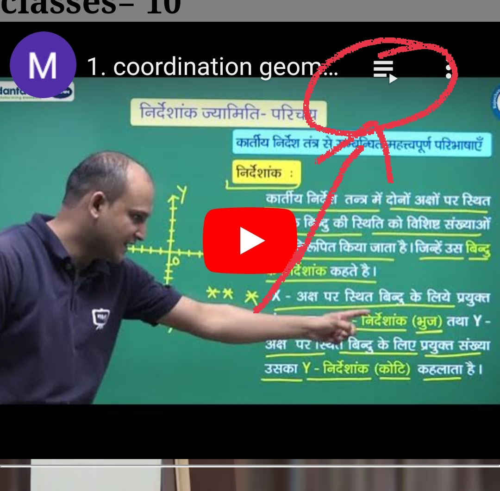
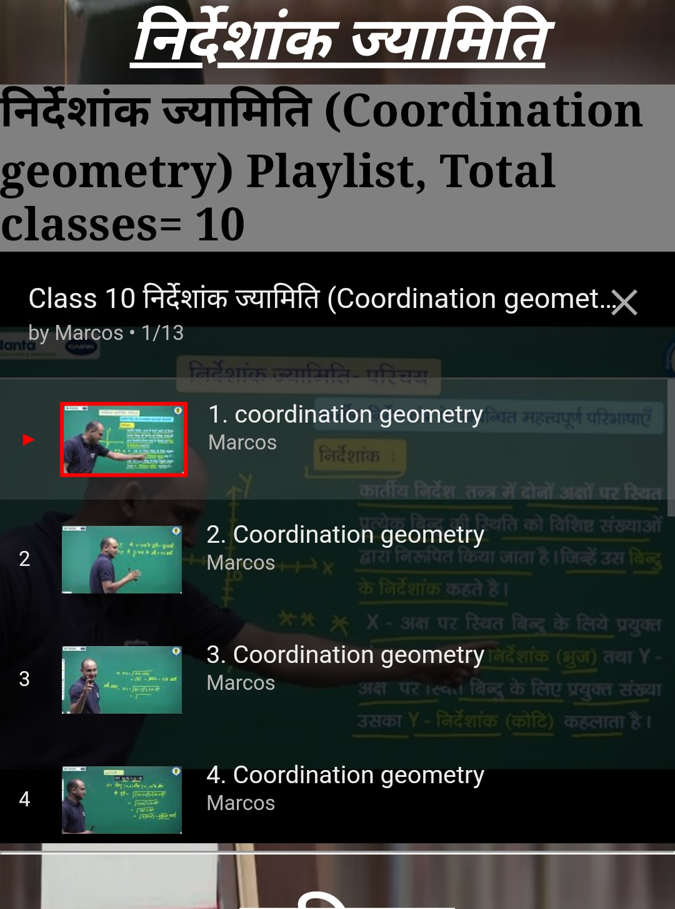

महत्वपूर्ण सुझाव- निर्देशांक ज्यामिति की साड़ी क्लासेस अपलोड कर दी गई है,
निर्देशांक ज्यामिति वीडियो में इसे क्लिक करने पर सारी 10 की 10 क्लास दिखेंगी


निर्देशांक ज्यामिति
निर्देशांक ज्यामिति (Coordination geometry) Playlist, Total classes= 10
प्रायिकता
Part-1 NCERT Class - 10 | गणित | प्रायिकता | प्रायिकता - परिचय
Part-2 NCERT Class - 10 | गणित | प्रायिकता | उदाहरण 1 से 6 तक
Part-3 NCERT | CBSE | RBSE | Class - 10 | गणित | प्रायिकता | उदाहरण 7 से 13 तक
महत्वपूर्ण सुझाव- भाग 1,2 और 3 को पढ़ने के बाद अब आपको भारती भवन में प्रायिकता के सभी साधित उदाहरणों को हल करना होगा, फिर आगे बढ़ना है
Part-4 NCERT Class - 10 | गणित | प्रायिकता | प्रश्नावली 15.1 प्रश्न संख्या 1 से 5 तक
Part-5 NCERT Class - 10 | गणित | प्रायिकता | प्रश्नावली 15.1 प्रश्न संख्या 6 से 10 तक
Part-6 NCERT | CBSE | RBSE | Class - 10 | गणित | प्रायिकता | प्रश्नावली 15.1 प्रश्न संख्या 11 से 15 तक
Part-7 NCERT | CBSE | RBSE | Class - 10 | गणित | प्रायिकता | प्रश्नावली 15.1 प्रश्न संख्या 16 से 20 तक
Part-8 NCERT | CBSE | RBSE | Class - 10 | गणित | प्रायिकता | प्रश्नावली 15.1 प्रश्न संख्या 21 से 25 तक
सांख्यिकी
Part-1 NCERT | CBSE | RBSE | Class - 10 | गणित | सांख्यिकी | भाग - 1
Part-2 NCERT | CBSE | RBSE | Class - 10 | गणित | सांख्यिकी | भाग - 2
Part-3 NCERT | CBSE | RBSE | Class - 10 | गणित | सांख्यिकी | भाग - 3
Part-4 NCERT | CBSE | RBSE | Class - 10 | गणित | सांख्यिकी | भाग - 4
Part-5 NCERT | CBSE | RBSE | Class - 10 | गणित | सांख्यिकी | भाग - 5
Part-6 NCERT | CBSE | RBSE | Class - 10 | गणित | सांख्यिकी | भाग - 6
महत्वपूर्ण सुझाव- भाग 1,2,3,4,5 और 6 को पढ़ने के बाद अब आपको भारती भवन में प्रायिकता के सभी साधित उदाहरणों को हल करना होगा, फिर आगे बढ़ना है
और सरकारी गणित की पुस्तक में सभी प्रश्नों को हल करें।
Part-7 NCERT | CBSE | RBSE | Class - 10 | गणित | सांख्यिकी | भाग - 7
रचनाएँ
Part-1 NCERT | CBSE | RBSE | Class - 10 | गणित | रचनाएँ | भाग - 1
Part-2 NCERT | CBSE | RBSE | Class - 10 | गणित | रचनाएँ | भाग - 2
Part-3 NCERT | CBSE | RBSE | Class - 10 | गणित | रचनाएँ | भाग - 3
महत्वपूर्ण सुझाव- भाग 1,2 और 3 को पढ़ने के बाद अब आपको भारती भवन में प्रायिकता के सभी साधित उदाहरणों को हल करना होगा, फिर आगे बढ़ना है
Part-4 NCERT | CBSE | RBSE | Class - 10 | गणित | रचनाएँ | भाग - 4
Part-5 NCERT | CBSE | RBSE | Class - 10 | गणित | रचनाएँ | भाग - 5
Part-6 NCERT | CBSE | RBSE | Class - 10 | गणित | रचनाएँ | भाग - 6
Part-7 NCERT | CBSE | RBSE | Class - 10 | गणित | रचनाएँ | भाग - 7
Part-8 NCERT | CBSE | RBSE | Class - 10 | गणित | रचनाएँ | भाग - 8
Part-9 NCERT | CBSE | RBSE | Class - 10 | गणित | रचनाएँ | भाग - 9
Part-10 NCERT | CBSE | RBSE | Class - 10 | गणित | रचनाएँ | भाग - 10